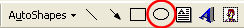
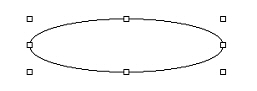
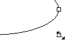
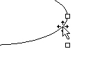
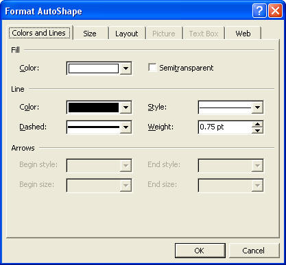
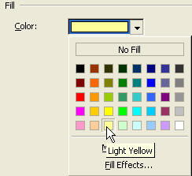

Free
computer Tutorials
|
Free
computer Tutorials
|
|
 home home |
|
||||
How to use the Drawing Toolbar in Microsoft WordIn this section, you'll see how to use the drawing toolbar. You'll design a Logo to give you some experience drawing and moving shapes around the page. We'll start with something simple, just a basic shape with some text added. This is the Logo you'll be designing:
So start Microsoft Word if you haven't already. You don't need to add any special formatting to your document. Just leave the margins and page set up as they are. For this section, you need the Drawing toolbar displayed. If you can't
see your drawing toolbar, click on View from the menu bar. From
the drop down menu, move your mouse to "Toolbars".
From the sub menu that appears, make sure there is a tick next to Drawing.
If there isn't, click on Drawing with your left mouse button.
Your drawing toolbar is displayed. If it's not at the top with all the
other tools, look at the bottom of the screen. This is the Drawing toolbar:
To add an oval to your new page, click on the oval in the Drawing toolbar:  Move your mouse pointer to your white page. (Anywhere on the page will do). Your mouse pointer will turn into a thin cross.
 If you hold your mouse over any of the white squares, your mouse pointer will change to the shape of a double-headed cross. This is the resize mouse pointer. To resize, hold down your left mouse button and drag in or out. The resize pointer looks like the one below:  Move your mouse pointer to the edges of the shape and the pointer turns into a arrow-headed cross. This is the Move pointer. To move your shape, hold down your left mouse button and drag the shape to the position you want. The Move pointer looks like this:  Once you have moved your shape into position, you can start to format it. We'll add some colour to our logo.
How to Add Colour to Your Microsoft Word LogoTo add a coloured background to your shape, do the following:
You'll get the Format Auto Shape dialogue box popping up. Click on the "Colours and Lines" tab at the top. Your dialogue box should look like this one:  The area we're interested in is Fill, right at the top of the dialogue box. At the moment, it is set to a white colour. Yours may even say No fill, meaning just the outline of the shape. To add a colour, click the black down-pointing arrow just to the right of the Fill drop down box. You should see the colour box appear:  To choose a colour for your shape, just click on one of the coloured squares with your left mouse button. Then click OK to close the dialogue box. Your shape should now have a coloured background.
With the shape still selected, we'll add a shadow to our oval and some text. We'll do that in the next part of this tutorial. Add a shadow and some text to a Shape in Word --> |
|||||
|